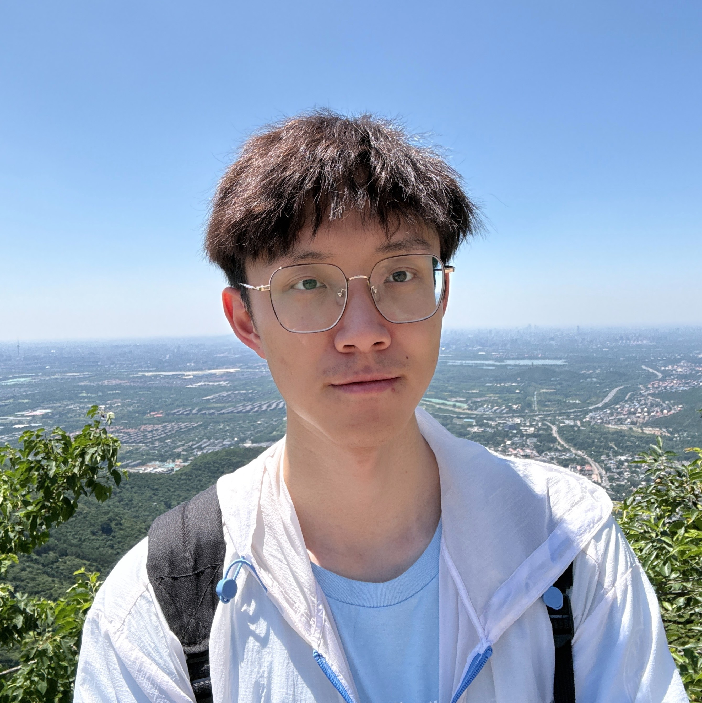
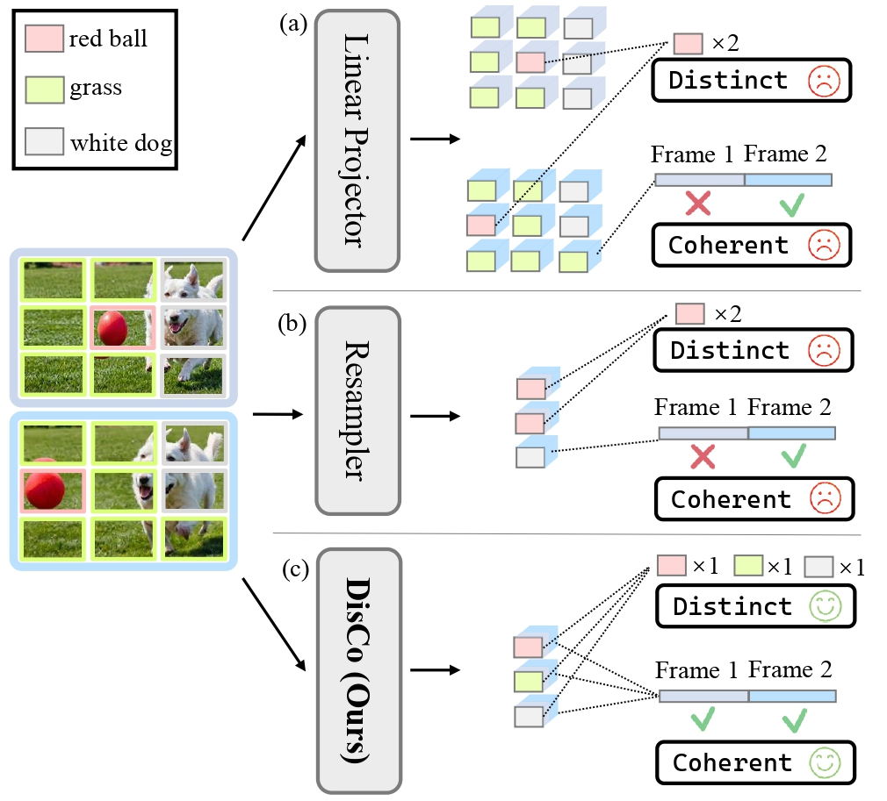
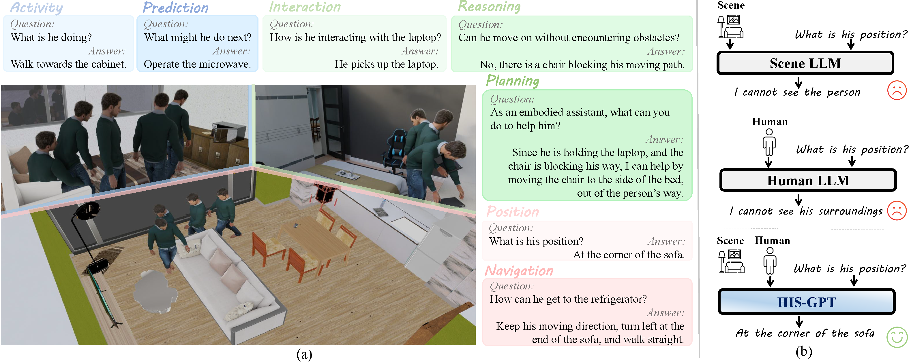
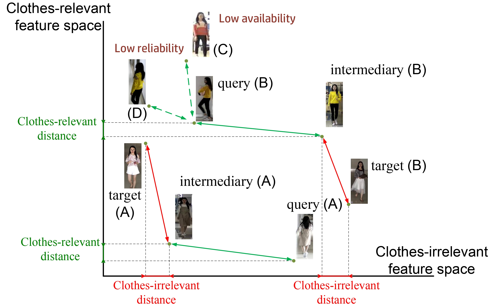
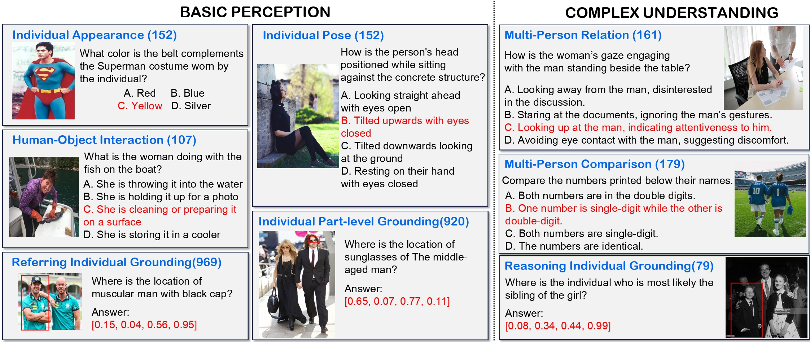

|
 |
Jiahe Zhao Master student at Chinese Academy of Sciences Incoming PhD student at MaVi Lab, University of Bristol Email: zhaojiahe1 at gmail dot com Google Scholar • GitHub |
|
I am a final year Master student at VIPL Lab, Institute of Computing Technology, Chinese Academy of Sciences, supervised by Prof. Hong Chang.
I achieved my bachelor's degree from the Department of Automation, Tsinghua University.
I'm an incoming PhD student at Mavi Lab, University of Bristol, supervised by Prof. Dima Damen.
I have spent wonderful times as a visiting student at the University of Hong Kong and Shanghai AI Laboratory, supervised by Prof. Hengshuang Zhao and Dr. Yi Wang.
|
 |
DisCo: Towards Distinct and Coherent Visual Encapsulation in Video MLLMs |
 |
HIS-GPT: Towards 3D Human-In-Scene Multimodal Understanding |
 |
Clothes-Changing Person Re-Identification with Feasibility-Aware Intermediary Matching |
 |
HERM: Benchmarking and Enhancing Multimodal LLMs for Human-Centric Understanding |
Work Experiences and Internships